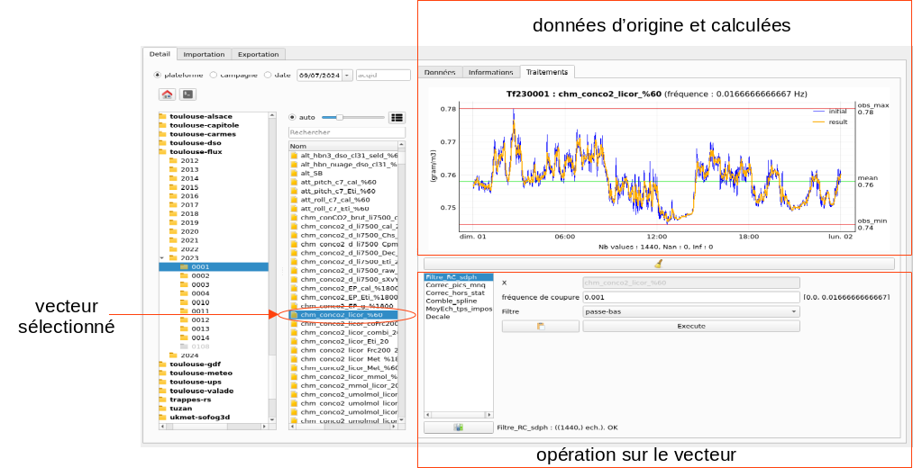

L'onglet Traitements
Il est activé lorsqu'un vecteur est sélectionné dans la navigation.
Il permet une visualiser plus fine des données (courbe bleue)
ainsi que le résultat de l'application d'un opérateur sur ces données (courbe orange)
La partie droite est divisée en trois parties :